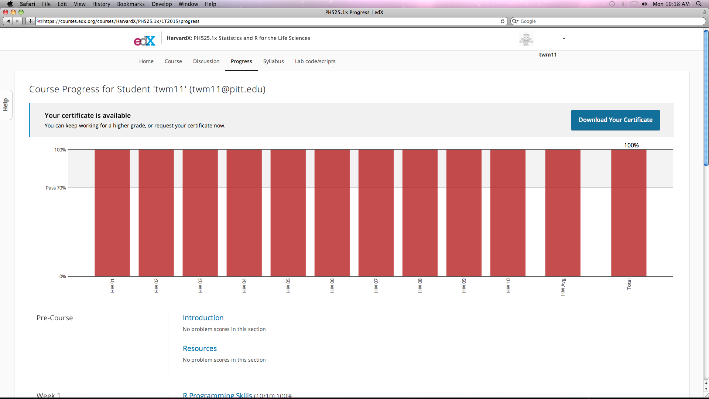
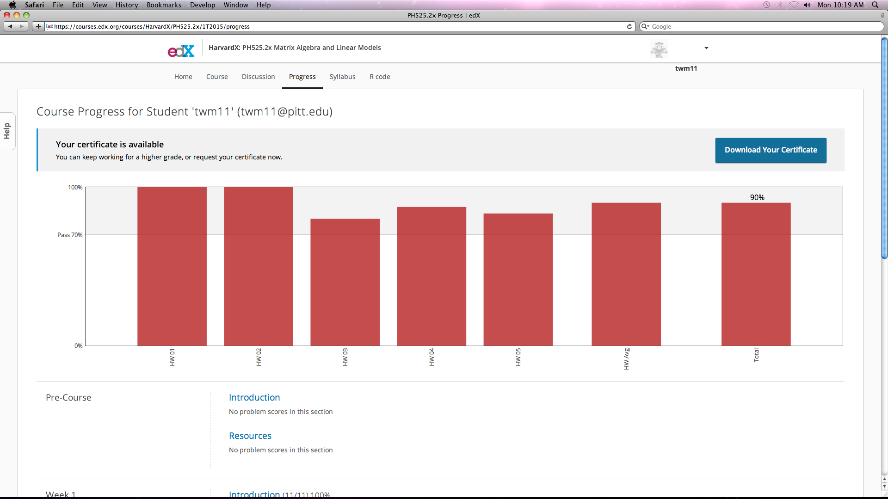
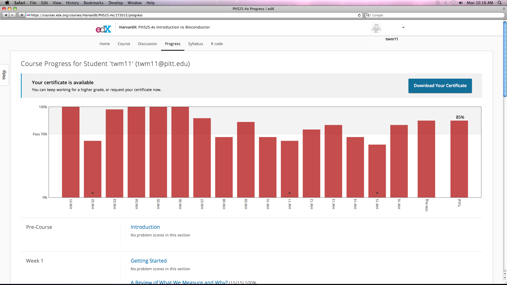
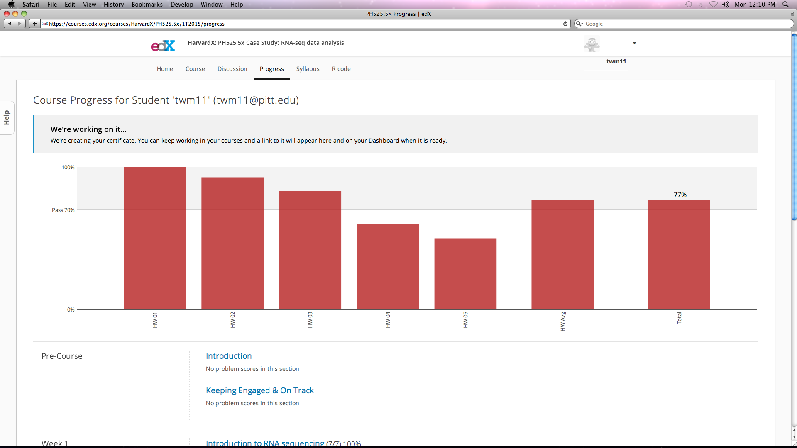
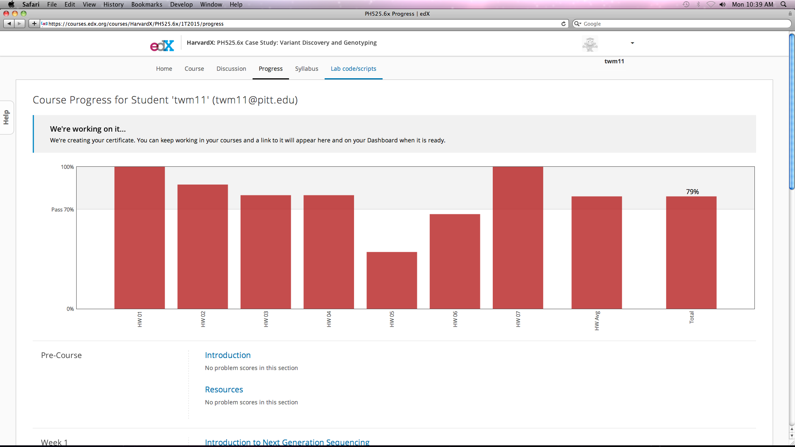
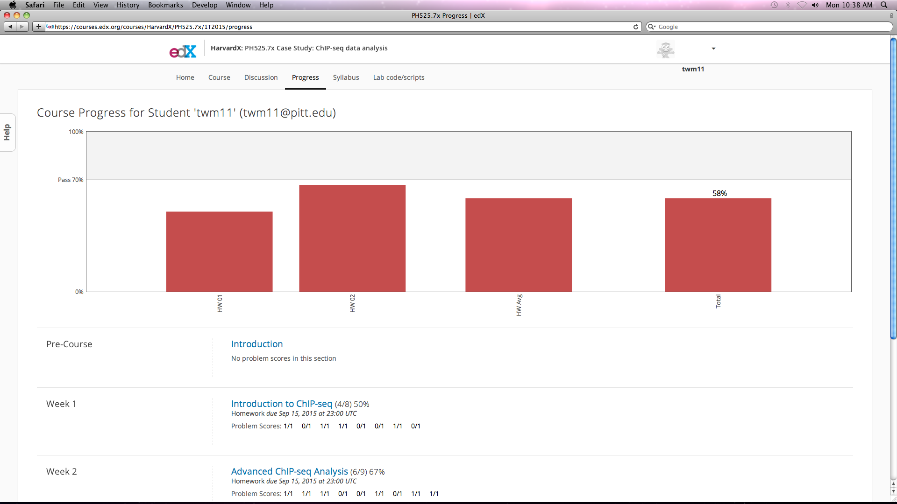
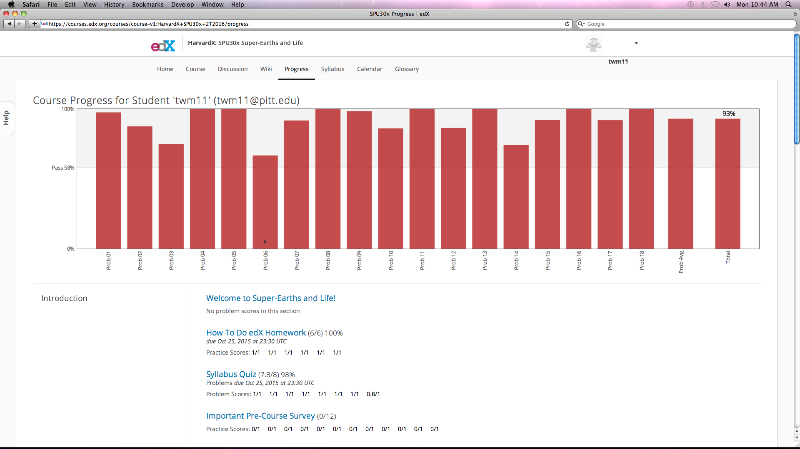
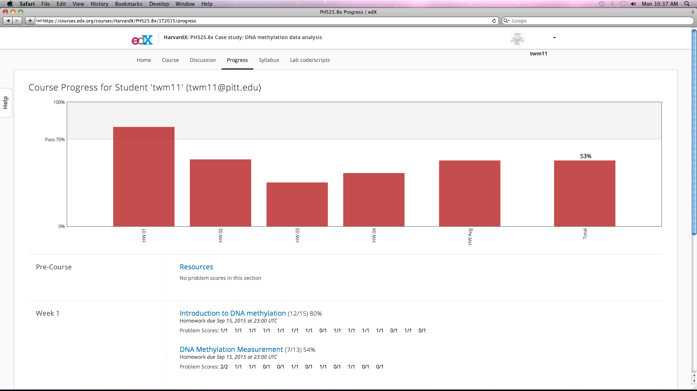
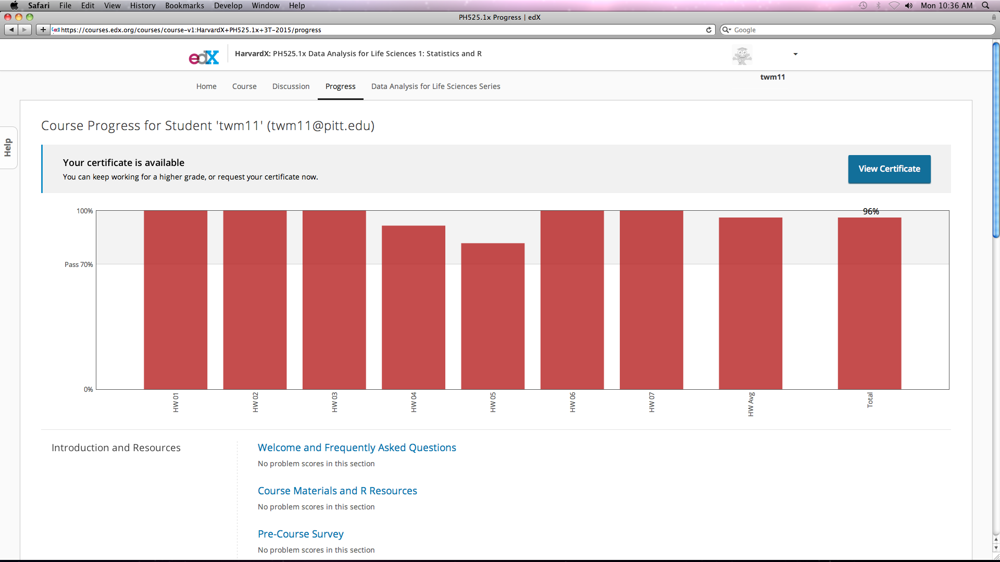
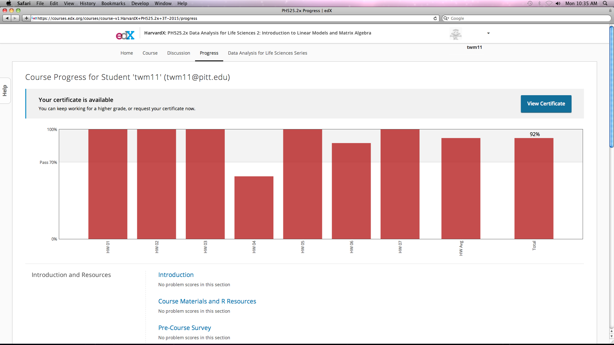

Certificates
Certificate Links
- PH525.1x: Statistics and R for the Life Sciences Certificate
- PH525.2x: Introduction to Linear Models and Matrix Algebra Certificate
- PH525.4x: Introduction to Bioconductor Certificate
- PH525.1x: Data Analysis for Life Sciences 1: Statistics and R Certificate
- SPU30x: Super-Earths and Life Certificate
- PH525.2x: Data Analysis for Life Sciences 2: Introduction to Linear Models and Matrix Algebra Certificate
Certificate Details
Enrolled in and completed these ten online courses during 2015 and 2016. Super-Earths and Life was presented by Dimitar Sasselov, Professor of Astronomy, Harvard University. The other nine were presented by Rafael Irizarry, Professor of Biostatistics, Harvard T.H. Chan School of Public Health. These courses cover R programming, statistics and biology.
-
PH525.1x: Statistics and R for the Life Sciences
-
PH525.2x: Introduction to Linear Models and Matrix Algebra
-
PH525.4x: Introduction to Bioconductor
-
PH525.5x Case Study: RNA-seq data analysis
-
PH525.6x Case Study: Variant Discovery and Genotyping
-
PH525.7x Case Study: ChIP-seq data analysis
-
PH525.8x Case study: DNA methylation data analysis
-
PH525.1x: Data Analysis for Life Sciences 1: Statistics and R
-
SPU30x: Super-Earths and Life
-
PH525.2x: Data Analysis for Life Sciences 2: Introduction to Linear Models and Matrix Algebra
I am speechless and on my knees with gratitude for these courses and the scientists and staff that created them. The online edX Platform might be the best online training platform available. The biostatistics courses are based on this book, available free:
Data Analysis for the Life Sciences, Rafael A Irizarry and Michael I Love
..and also here on github:
I completed 8 of these courses on time and with scores high enough to earn a certificate. For two classes, ChIP-seq data analysis and DNA methylation data analysis, scores were too low to earn a certificate. Links to certificates and detailed information of performance are shown below for all ten completed courses. I am presently continuing to pursue knowledge and skills in these deep waters of statistics, biology, data analysis and R programming.
PH525.1x: Statistics and R for the Life Sciences 
PH525.2x: Introduction to Linear Models and Matrix Algebra 
PH525.4x: Introduction to Bioconductor 
PH525.5x Case Study: RNA-seq data analysis 
PH525.6x Case Study: Variant Discovery and Genotyping 
PH525.7x Case Study: ChIP-seq data analysis 
SPU30x: Super-Earths and Life 
PH525.8x Case study: DNA methylation data analysis 
PH525.1x: Data Analysis for Life Sciences 1: Statistics and R 
PH525.2x: Data Analysis for Life Sciences 2: Introduction to Linear Models and Matrix Algebra 
HONOR CODE CERTIFICATE Verify the authenticity of this certificate at
PH525.1x: Statistics and R for the Life Sciences Certificate
PH525.1x: Statistics and R for the Life Sciences Certificate
HONOR CODE CERTIFICATE Verify the authenticity of this certificate at Issued May 26, 2015
PH525.2x: Introduction to Linear Models and Matrix Algebra Certificate
PH525.2x: Introduction to Linear Models and Matrix Algebra Certificate
HONOR CODE CERTIFICATE Verify the authenticity of this certificate at Issued August 24, 2015
PH525.4x: Introduction to Bioconductor Certificate
PH525.4x: Introduction to Bioconductor Certificate
PH525.1x: Data Analysis for Life Sciences 1: Statistics and R Certificate
HONOR CODE CERTIFICATE Issued November 23, 2015 VALID CERTIFICATE ID 871ed33dde8c491d95d5f53fec8bb293
SPU30x: Super-Earths and Life Certificate
Dimitar Sasselov Professor of Astronomy Harvard University HONOR CODE CERTIFICATE Issued December 5, 2015 VALID CERTIFICATE ID edec54cb74f545038bf8c5c7705b85b0
HONOR CODE CERTIFICATE Issued February 16, 2016 VALID CERTIFICATE ID c739bdb741594decbc1fff16e7cf31aa